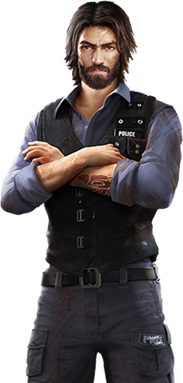
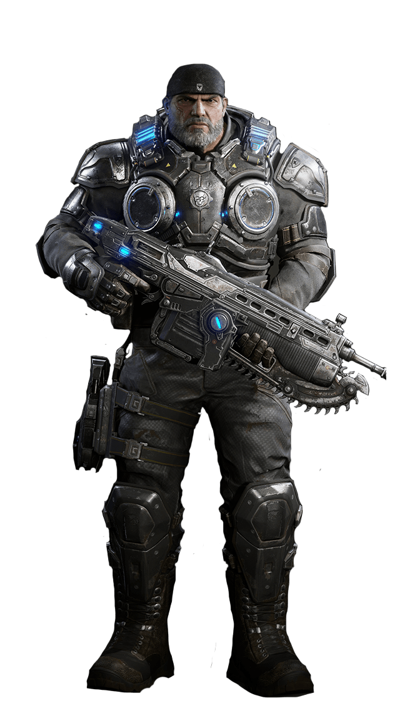
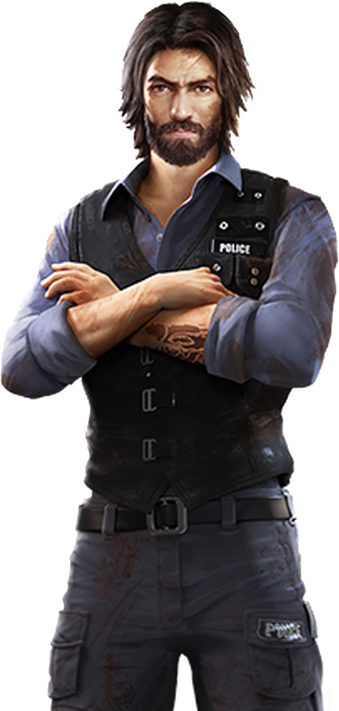
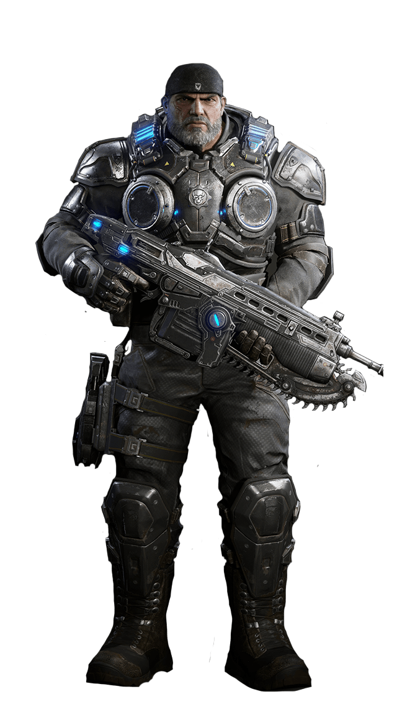

Comisario Fred
Ventajas: Restringe el movimiento al equipo contrario cuando fallan una pregunta durante el siguiente turno.
Piloto Brus
Ventajas: Si acierta correctamente sin ayuda vuelve a tirar el dado.
Emy
Ventajas:Esta investigadora podrá quitar instrumentos especiales del otro grupo. Solo podrá hacerlo si su grupo acierta la pregunta.